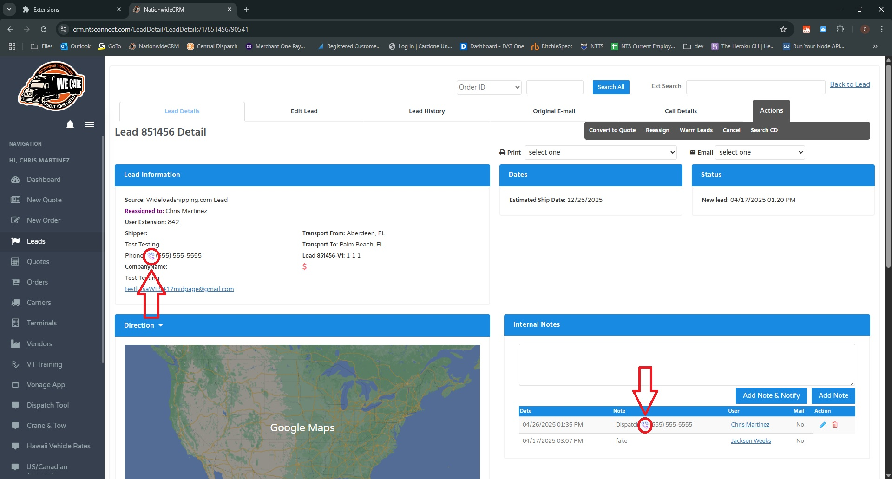
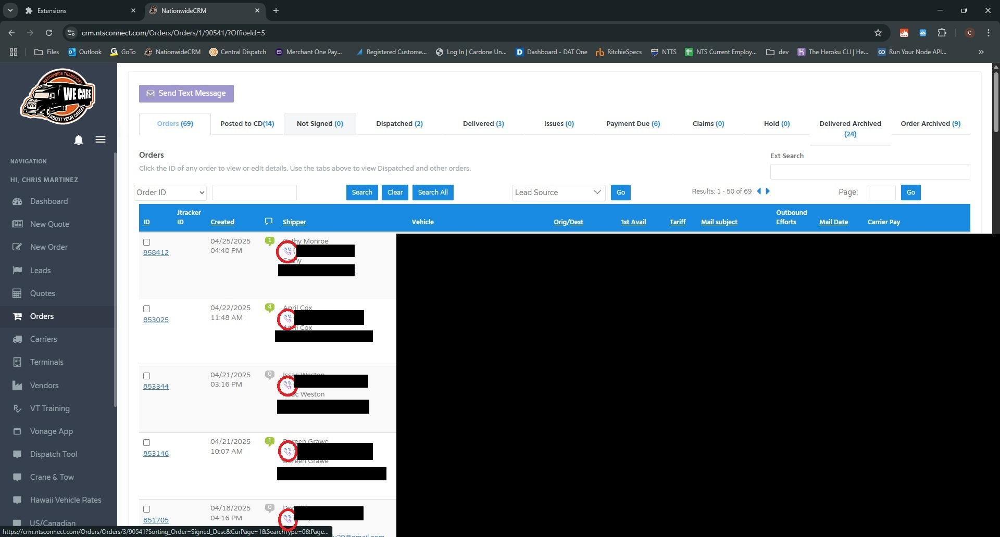

Using the extension
The NTS: GoTo Integration Suite will only work with phone numbers displayed in the NTS CRM, and it will only work with numbers that are formatted like: (555) 555-5555. When putting in your notes, if you want numbers to be clickable, you must use this format.
A phone icon will appear to the left of properly formatted phone numbers. Clicking on this icon will send the call to you desk phone.

